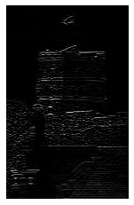

CNN¶
%matplotlib inline
import os
import time
import numpy as np
import pandas as pd
import matplotlib.pyplot as plt
import tensorflow.keras as keras
from tensorflow.keras.layers import Dense, Input, Flatten, Conv2D, BatchNormalization, Activation, Dropout, MaxPooling2D
from tensorflow.keras.models import Sequential
from tensorflow.keras.optimizers import Adam
from tensorflow.keras.callbacks import TensorBoard
from IPython.display import YouTubeVideo
from PIL import Image
def plot(X):
plt.imshow(X, cmap='gray', vmin=0, vmax=1)
plt.axis('off')
def apply_filter(X, F):
x, y = X.shape
filter_x, filter_y = F.shape
X_with_filter = np.zeros(shape=(x - filter_x, y - filter_y))
for i in range(x - filter_x):
for j in range(y - filter_y):
X_with_filter[i, j] = (X[i:(i+filter_x), j:(j+filter_y)] * F).sum()
return X_with_filter
img = Image.open('img/castle.jpg')
img.load()
X = np.asarray(img, dtype="int32") / 255
# X = X.mean(axis=2) / 255
plot(X)
Filters¶
Simple box blur¶
F = np.ones(shape=(5, 5)) / 25
plot(apply_filter(X, F))
Line detection¶
F = np.array([[-1, -1, -1],
[ 2, 2, 2],
[-1, -1, -1]])
plot(apply_filter(X, F))

F = np.array([[-1, 2, -1],
[-1, 2, -1],
[-1, 2, -1]])
plot(apply_filter(X, F))

Edge detection¶
F = np.array([[-1, -1, -1],
[-1, 8, -1],
[-1, -1, -1]])
plot(apply_filter(X, F))
The Sobel Edge Operator¶
F_horizontal = np.array([[-1, -2, -1],
[ 0, 0, 0],
[ 1, 2, 1]])
F_vertical = np.array([[-1, -2, -1],
[ 0, 0, 0],
[ 1, 2, 1]])
plot(np.sqrt(apply_filter(X, F_horizontal)**2 + apply_filter(X, F_vertical)**2))
CNN¶
Following video contains a neat visualization of CNN.
YouTubeVideo('utOv-BKI_vo', width=800, height=600)
Let’s load MNIST dataset.
(X_train, y_train), (X_test, y_test) = keras.datasets.mnist.load_data()
# Normalize (note that we add channel)
X_train = X_train.reshape(X_train.shape[0], 28, 28, 1) / 255
X_test = X_test.reshape(X_test.shape[0], 28, 28, 1) / 255
model = keras.models.Sequential()
model.add(keras.layers.Conv2D(32, kernel_size=(3, 3), activation='relu', input_shape=[28, 28, 1]))
model.add(keras.layers.Conv2D(32, kernel_size=(3, 3), activation='relu'))
model.add(Flatten())
model.add(keras.layers.Dense(100, activation="relu"))
model.add(keras.layers.Dense(10, activation="softmax"))
model.compile(loss="sparse_categorical_crossentropy",
optimizer="sgd",
metrics=["accuracy"])
model.summary()
_________________________________________________________________
Layer (type) Output Shape Param #
=================================================================
conv2d_29 (Conv2D) (None, 26, 26, 32) 320
_________________________________________________________________
conv2d_30 (Conv2D) (None, 24, 24, 32) 9248
_________________________________________________________________
flatten_9 (Flatten) (None, 18432) 0
_________________________________________________________________
dense_19 (Dense) (None, 100) 1843300
_________________________________________________________________
dense_20 (Dense) (None, 10) 1010
=================================================================
Total params: 1,853,878
Trainable params: 1,853,878
Non-trainable params: 0
_________________________________________________________________
loss = model.fit(X_train, y_train, epochs=10, validation_split=0.2)
Train on 48000 samples, validate on 12000 samples
Epoch 1/10
48000/48000 [==============================] - 68s 1ms/step - loss: 0.3984 - acc: 0.8854 - val_loss: 0.1903 - val_acc: 0.9450
Epoch 2/10
48000/48000 [==============================] - 67s 1ms/step - loss: 0.1673 - acc: 0.9500 - val_loss: 0.1482 - val_acc: 0.9563
Epoch 3/10
48000/48000 [==============================] - 78s 2ms/step - loss: 0.1228 - acc: 0.9630 - val_loss: 0.1101 - val_acc: 0.9674
Epoch 4/10
48000/48000 [==============================] - 84s 2ms/step - loss: 0.0989 - acc: 0.9700 - val_loss: 0.1002 - val_acc: 0.9710
Epoch 5/10
48000/48000 [==============================] - 83s 2ms/step - loss: 0.0818 - acc: 0.9752 - val_loss: 0.0952 - val_acc: 0.9728
Epoch 6/10
48000/48000 [==============================] - 66s 1ms/step - loss: 0.0702 - acc: 0.9781 - val_loss: 0.0929 - val_acc: 0.9714
Epoch 7/10
48000/48000 [==============================] - 82s 2ms/step - loss: 0.0607 - acc: 0.9814 - val_loss: 0.0833 - val_acc: 0.9752
Epoch 8/10
48000/48000 [==============================] - 74s 2ms/step - loss: 0.0520 - acc: 0.9841 - val_loss: 0.0856 - val_acc: 0.9745
Epoch 9/10
48000/48000 [==============================] - 76s 2ms/step - loss: 0.0453 - acc: 0.9863 - val_loss: 0.0870 - val_acc: 0.9738
Epoch 10/10
48000/48000 [==============================] - 62s 1ms/step - loss: 0.0394 - acc: 0.9878 - val_loss: 0.0857 - val_acc: 0.9766
pd.DataFrame(loss.history).plot()
<matplotlib.axes._subplots.AxesSubplot at 0x7fdf2b363390>

Using FCN we had 96.36% on test set.
pred = model.predict(X_test).argmax(axis=1)
print('Accuracy on test set - {0:.02%}'.format((pred == y_test).mean()))
Accuracy on test set - 97.72%
What’s next?¶
NOTE: LONG TRAINING TIME!
There are multiple other tricks (Dropout, MaxPooling, …) which can increse performance even more, but general CNN principle is still leading solution in image recognition.
We will look at these tricks later, but let’s see what they can do.
model = Sequential()
model.add(Conv2D(32, kernel_size=(3, 3), input_shape=[28, 28, 1]))
model.add(BatchNormalization(axis=-1)) # Axis -1 is always the features axis
model.add(Activation("relu"))
model.add(Conv2D(32, (3, 3), activation='relu'))
model.add(BatchNormalization(axis=-1))
model.add(Activation("relu"))
model.add(MaxPooling2D(pool_size=(2, 2)))
model.add(BatchNormalization(axis=-1))
model.add(Flatten())
model.add(Dense(128, activation='relu'))
model.add(Dropout(0.2))
model.add(Dense(10, activation='softmax'))
model.compile(loss="sparse_categorical_crossentropy",
optimizer=keras.optimizers.Adadelta(),
metrics=["accuracy"])
model.summary()
_________________________________________________________________
Layer (type) Output Shape Param #
=================================================================
conv2d_3 (Conv2D) (None, 26, 26, 32) 320
_________________________________________________________________
batch_normalization_4 (Batch (None, 26, 26, 32) 128
_________________________________________________________________
activation_2 (Activation) (None, 26, 26, 32) 0
_________________________________________________________________
conv2d_4 (Conv2D) (None, 24, 24, 32) 9248
_________________________________________________________________
batch_normalization_5 (Batch (None, 24, 24, 32) 128
_________________________________________________________________
activation_3 (Activation) (None, 24, 24, 32) 0
_________________________________________________________________
max_pooling2d_1 (MaxPooling2 (None, 12, 12, 32) 0
_________________________________________________________________
batch_normalization_6 (Batch (None, 12, 12, 32) 128
_________________________________________________________________
flatten_1 (Flatten) (None, 4608) 0
_________________________________________________________________
dense_1 (Dense) (None, 128) 589952
_________________________________________________________________
dropout (Dropout) (None, 128) 0
_________________________________________________________________
dense_2 (Dense) (None, 10) 1290
=================================================================
Total params: 601,194
Trainable params: 601,002
Non-trainable params: 192
_________________________________________________________________
loss = model.fit(X_train, y_train, epochs=5, batch_size=64, validation_split=0.2)
Train on 48000 samples, validate on 12000 samples
Epoch 1/5
48000/48000 [==============================] - 138s 3ms/step - loss: 0.0053 - acc: 0.9982 - val_loss: 0.0586 - val_acc: 0.9885
Epoch 2/5
48000/48000 [==============================] - 134s 3ms/step - loss: 0.0039 - acc: 0.9988 - val_loss: 0.0469 - val_acc: 0.9890
Epoch 3/5
48000/48000 [==============================] - 145s 3ms/step - loss: 0.0042 - acc: 0.9985 - val_loss: 0.0487 - val_acc: 0.9906
Epoch 4/5
48000/48000 [==============================] - 112s 2ms/step - loss: 0.0033 - acc: 0.9988 - val_loss: 0.0574 - val_acc: 0.9902
Epoch 5/5
48000/48000 [==============================] - 102s 2ms/step - loss: 0.0031 - acc: 0.9991 - val_loss: 0.0677 - val_acc: 0.9889
pred = model.predict(X_test).argmax(axis=1)
print('Accuracy on test set - {0:.02%}'.format((pred == y_test).mean()))
Accuracy on test set - 98.98%
Usually in blogs and books you will find following implementation which uses dropout between CNN layers, but there is well known critique of this technique.
Standard CNN implementation¶
model = Sequential()
model.add(Conv2D(32, kernel_size=(3, 3), activation='relu', input_shape=[28, 28, 1]))
model.add(Conv2D(64, (3, 3), activation='relu'))
model.add(MaxPooling2D(pool_size=(2, 2)))
model.add(Dropout(0.25))
model.add(Flatten())
model.add(Dense(128, activation='relu'))
model.add(Dropout(0.5))
model.add(Dense(10, activation='softmax'))
model.compile(loss="sparse_categorical_crossentropy",
optimizer=keras.optimizers.Adam(),
metrics=["accuracy"])
model.summary()
_________________________________________________________________
Layer (type) Output Shape Param #
=================================================================
conv2d_4 (Conv2D) (None, 26, 26, 32) 320
_________________________________________________________________
conv2d_5 (Conv2D) (None, 24, 24, 64) 18496
_________________________________________________________________
max_pooling2d_2 (MaxPooling2 (None, 12, 12, 64) 0
_________________________________________________________________
dropout_4 (Dropout) (None, 12, 12, 64) 0
_________________________________________________________________
flatten_2 (Flatten) (None, 9216) 0
_________________________________________________________________
dense_4 (Dense) (None, 128) 1179776
_________________________________________________________________
dropout_5 (Dropout) (None, 128) 0
_________________________________________________________________
dense_5 (Dense) (None, 10) 1290
=================================================================
Total params: 1,199,882
Trainable params: 1,199,882
Non-trainable params: 0
_________________________________________________________________
Let’s add logger so that we can check outputs in tensorboard. To run tensorboard use: tensorboard --logdir=./my_logs --port=6006.
root_logdir = os.path.join(os.curdir, "my_logs")
def get_run_logdir():
run_id = time.strftime("run_%Y_%m_%d-%H_%M_%S")
return os.path.join(root_logdir, run_id)
run_logdir = get_run_logdir()
tensorboard_cb = TensorBoard(run_logdir)
model.fit(X_train, y_train, epochs=10, batch_size=128, validation_split=0.2, callbacks=[tensorboard_cb])
Train on 48000 samples, validate on 12000 samples
Epoch 1/10
48000/48000 [==============================] - 87s 2ms/step - loss: 0.2842 - acc: 0.9127 - val_loss: 0.0660 - val_acc: 0.9810
Epoch 2/10
48000/48000 [==============================] - 87s 2ms/step - loss: 0.0962 - acc: 0.9714 - val_loss: 0.0482 - val_acc: 0.9860
Epoch 3/10
48000/48000 [==============================] - 83s 2ms/step - loss: 0.0699 - acc: 0.9789 - val_loss: 0.0431 - val_acc: 0.9870
Epoch 4/10
48000/48000 [==============================] - 82s 2ms/step - loss: 0.0592 - acc: 0.9820 - val_loss: 0.0375 - val_acc: 0.9878
Epoch 5/10
48000/48000 [==============================] - 82s 2ms/step - loss: 0.0468 - acc: 0.9858 - val_loss: 0.0372 - val_acc: 0.9881
Epoch 6/10
48000/48000 [==============================] - 84s 2ms/step - loss: 0.0406 - acc: 0.9871 - val_loss: 0.0356 - val_acc: 0.9904
Epoch 7/10
48000/48000 [==============================] - 83s 2ms/step - loss: 0.0379 - acc: 0.9882 - val_loss: 0.0337 - val_acc: 0.9905
Epoch 8/10
48000/48000 [==============================] - 91s 2ms/step - loss: 0.0326 - acc: 0.9899 - val_loss: 0.0362 - val_acc: 0.9901
Epoch 9/10
48000/48000 [==============================] - 96s 2ms/step - loss: 0.0295 - acc: 0.9904 - val_loss: 0.0362 - val_acc: 0.9910
Epoch 10/10
48000/48000 [==============================] - 86s 2ms/step - loss: 0.0272 - acc: 0.9907 - val_loss: 0.0375 - val_acc: 0.9902
<tensorflow.python.keras.callbacks.History at 0x7f316b760fd0>
Go to tensorboard and familarize with it while model is training.
pred = model.predict(X_test).argmax(axis=1)
print('Accuracy on test set - {0:.02%}'.format((pred == y_test).mean()))
Accuracy on test set - 99.25%